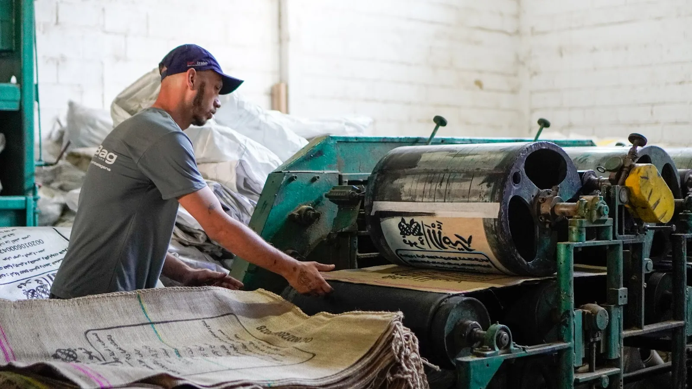
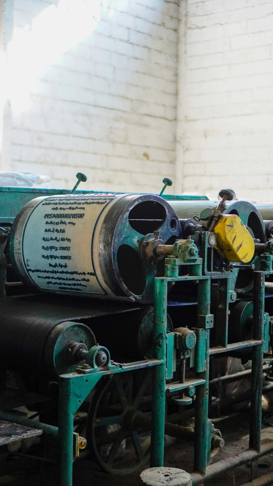
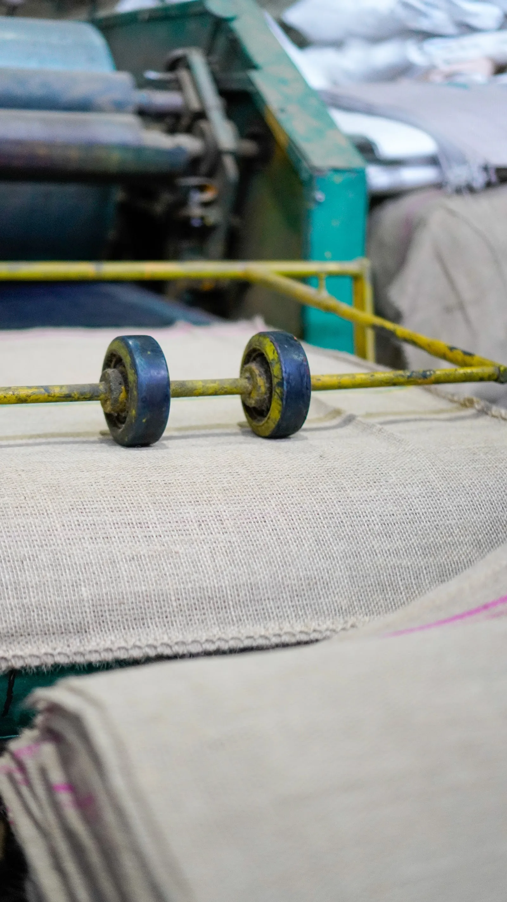
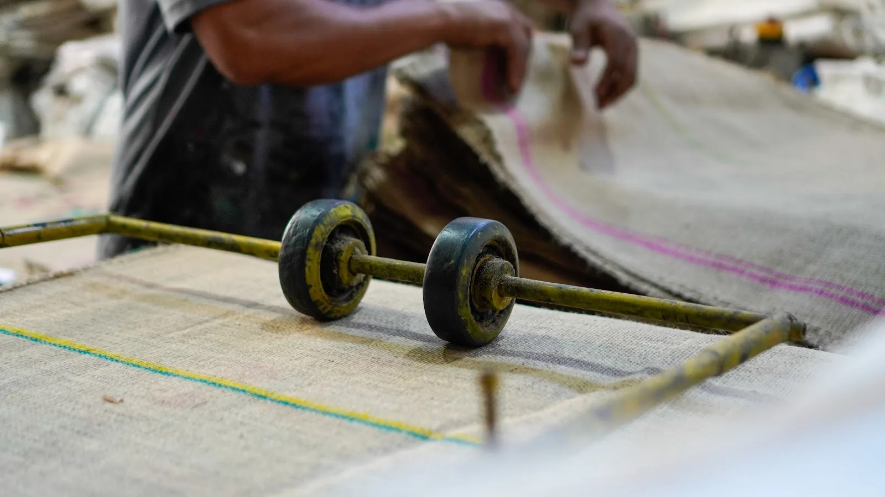

Fabricacao industrial
Estrutura para produzir sacarias com regularidade, acabamento e controle de etapas.

Desde 1989 em sacarias industriais
Sacarias, bags e embalagens personalizadas com producao propria, impressao aplicada e atendimento pensado para empresas que precisam de escala, padrao e confianca.
Brasil Bag
Estrutura para produzir sacarias com regularidade, acabamento e controle de etapas.
Impressao de marca, informacoes tecnicas e identificacao do produto direto na embalagem.
Orcamentos sob medida para industrias, distribuidores, produtores e operacoes recorrentes.
Solucoes
O site foi pensado para comunicar uma linha comercial objetiva, mesmo quando o pedido exige medidas, arte e aplicacoes especificas.

Embalagens com identidade visual, informacoes de produto, lote, origem e mensagens comerciais.
Opcoes para armazenamento, transporte e exposicao de produtos em volumes comerciais.
Costura, dimensoes, reforcos e composicoes definidos conforme o uso final.
Processo de impressao para tornar a embalagem rastreavel, reconhecivel e pronta para venda.
Role para controlar
O tecido entra em preparacao, passa por acabamento, recebe impressao e sai pronto para representar sua marca no mercado.
Da materia-prima ao envio
Entendimento de medidas, volume, produto acondicionado, layout e necessidade de acabamento.
A fabrica executa preparacao, impressao e fechamento com acompanhamento visual de qualidade.
O pedido segue pronto para armazenagem, envase, transporte ou distribuicao.


Qualidade percebida
Para quem compra em escala, embalagem boa e aquela que chega com consistencia, identifica o produto com clareza e ajuda a reduzir atrito na rotina comercial.
Galeria oficial


Perguntas comerciais
Medidas, quantidade, tipo de produto embalado, peso aproximado, necessidade de impressao e prazo desejado.
Sim. O projeto visual pode incluir logotipo, informacoes tecnicas, identificacao de produto e elementos promocionais.
Sim. A comunicacao do site foi pensada para compras B2B, pedidos recorrentes e demandas sob medida.
Cotacao
Envie medidas, quantidade e arte desejada. A Brasil Bag retorna com a melhor configuracao para sua necessidade.